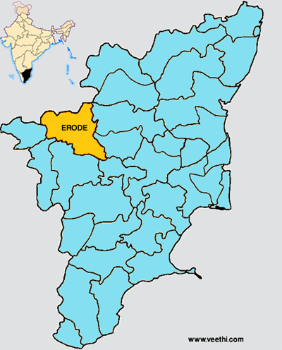
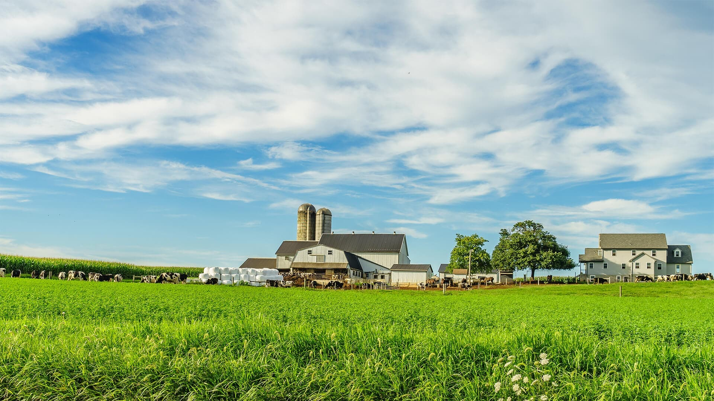
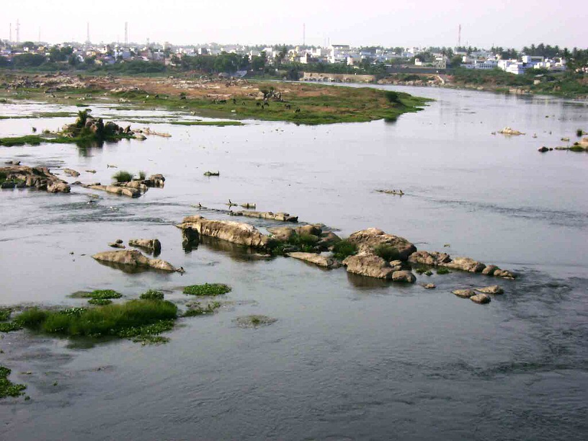
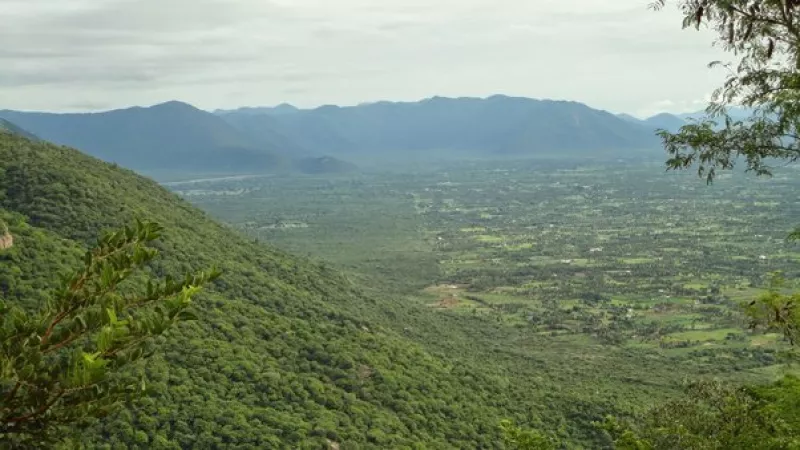

|

|
ERODE ABOUT
Erode is a city in the Indian state of Tamil Nadu. It is located on the banks of the Kaveri river and is surrounded by the Western Ghats. Erode is the seventh largest urban agglomeration in Tamil Nadu. It is the administrative capital of Erode district and is administered by the Erode Municipal Corporation which was established in 2008. Erode District was a part of Coimbatore has its history intervened with that of Coimbatore and because of its close linkage with the erstwhile Coimbatore district. It is very difficult to separately deal with the history of Erode region. Together with the area comprised in the Coimbatore district, it formed part of the ancient Kongu region.Erode District was a part of Coimbatore has its history intervened with that of Coimbatore and because of its close linkage with the erstwhile Coimbatore district.
It is very difficult to separately deal with the history of Erode region. Together with the area comprised in the Coimbatore district, it formed part of the ancient Kongu region. It is found that in the early days, this area was occupied by tribes, most prominent among them being the “Kosars” reportedly having their headquarters at ‘Kosamputhur’ which is believed to have in due course become Coimbatore. These tribes were overpowered by the Rashtrakutas from whom the region fell into the hands of the Cholas who ruled supreme during the time of Raja Chola. On the decline of Cholas, the Kongu region came to be occupied by the Chalukyas and later by the Pandyas and Hoysalas. Due to internal dissension in the Pandian Kingdom, the Muslim rulers from Delhi interfered and thus the area fell into the hands of Madurai Sultanate. This region was later wrested by Vijaya Nagar rulers after over throwing the Madurai Sultanate. For a few years, the area remained under Vijaya Nagar rule and later under the independent control of Madurai Nayakas. The rule of Muthu Veerappa Nayak and later that of Tirumalai Nayak were marked by internal strife and intermittent wars which ruined the Kingdom. As a result of this, the Kongu region in which the present Erode District is situated, fell into the hands of the Mysore rulers from whom Hyder Ali took over the area. Later, consequent of the fall of Tippu Sultlan of Mysore in 1799, the Kongu region came to be coded to the East India Company by the Maharaja of Mysore who was restored to power by the company after defeating Tippu Sulltan. From then, till 1947 when India attained independence, the area remained under British control who initiated systematic revenue administration in the area.
|
Agriculture
Erode district in Tamil Nadu is known for its extensive turmeric cultivation, earning it the nickname "Turmeric City" or "Yellow City". It's also a major producer of cotton and handloom fabrics, known as the "Loom of India". Other significant crops include jackfruit, banana, mango, and various vegetables. Erode is also a significant market for coconut.
Though noted for trade and industry, the district is by no means backward in the filed of agriculture. Close association and link with Coimbatore district which has the advantage of two premier agricultural Institutions viz., the Agricultural College and the Research Institute have helped the ryots to keep abrest of developments in agricultural methods and practices and also improved strains of seeds. The publicity and developmental activities launched by the agricultural institutions in Coimbatore penetrated far and wide in Erode District. Added to this was the propaganda and demonstration organised by the Agricultural Department. Availability of irrigation facilities coupled with the awareness of improved methods of farming helped the agriculturists to forge ahead. Though the soil is not the best, utilisation of improved methods of cultivation and improved strains of seeds together have helped the agriculturists in the district to maximise their output. Paddy accounts for 86,939 hectares. Next to Paddy is Cholam which is raise in more than 11240 hectares.
Pulses are not much in cultivation in the district. Only 31498 hectares are used for raising pulses. Among condiments and spices, turmeric and chillies are significant. Cultivation of turmeric extends over 14533 hectares . Among the non-food crops, oil seeds constitute the major item. 55.23 % of the total area under non food crops is accounted for by oil seeds. A total of 95018 hectares is under oil-seeds cultivation and of these ground-nuts account for 55696 hectares while gingely accounts for 24084 hectares. Ground-nut is the most popular oil-seed raised here.
|

|
|

|
Rivers
Bhavani, Cauvery and Noyyal are the main rivers of the district. Other significant river is Palar in the North. Palar constitutes the boundary between Erode district and Karnataka State in the North. The Bhavanisagar main canal along with the above mentioned rivers provide proper drainage and facilities for assured irrigation in the district. Bhavani rises in the silent valley in Palghat ranges in the neighbouring State of Kerala after receiving Siruvani, a perennial stream of Coimbatore District and gets reinforced by the Kundah river before entering Erode District in Gobichettipalayam.
Bhavani is more or less a perennial river fed mostly by the South-West monsoon. North-East monsoon also supplements its water resources. This river runs for over hundred miles through Erode District traversing through Bhavani and Gobichettipalayam taluks. It feeds the Bhavanisagar reservoir which takes an easterly course flowing through Gobichettipalayam, Sathyamangalam and Bhavani taluks before it ultimately joins river Cauvery on the Salem borders.
Cauvery rising in the Coorg, is joined by many small tributaries. It turns through Karnataka and at Hogenakal fall takes a sharp turn, east to south. Before reaching this point, its main tributary, viz., river Kabini joins it. From here it takes a south-easterly direction forming the boundary between Bhavani taluk of Erode District and Tiruchengode taluk of the neighbouring Namakkal District. After river Bhavani flows into it, the south-easterly course is continued forming the boundary between Erode taluk of Erode District and Tiruchengode taluk of Namakkal taluk.
|
Forests
With more than 228,750 hectares of land under dense forest, Erode is one of the few fortunate districts in the State which can boost of extensive forest area. 27.7% of the total district area is under forests. These forests are rich in commercially significant items such as teak, sandalwood, rosewood, vogai, pillaimaruthu etc. Sandalwood is abundant in moyar valley and in strips facting Dodda Combai in Talamalai ranges. Tamarind trees are plenty in Bhavani ranges. In high land forest of elevation 2,000 feet to 5,000 feet, diversified flora are prevalent. Here we find semi evergreen type, teak type, sandal type, bamboo type and shola type of vegetation.
Teak is available mostly in ranges of 3,200 feet to 3,600 feet. Important places where bamboo is available are in the outer slopes of north Coimbatore plateau between 1,500 feet to 3,000 feet elevation. Main centres of availability are Vadaparai and Hussanur basin in Sathyamangalam ranges. Dodda Combai in Bhavani ranges is also significant for the availability of bamboo. The Southern Forest Rangers’ College at Coimbatore has given a fillip to the forest conservation in this district also.
The district is rich in fauna. It is varied and all the common species normally found in ranges and plains in the south are found to occur in this district. Significant is the presence of wild elephants and tigers especially on the hills in the northern or north-eastern parts of the district. Cheetahs are not altogether absent. They are sparsely distributed. Panthers are found in the scrub jungles and rocky hills of the district. Spotted deer, barking deers, jungle sheep etc. are normally present in the northern ranges. The Barugur cattle found in Bhavani ranges are though small in size, well built and sturdy.
|

|